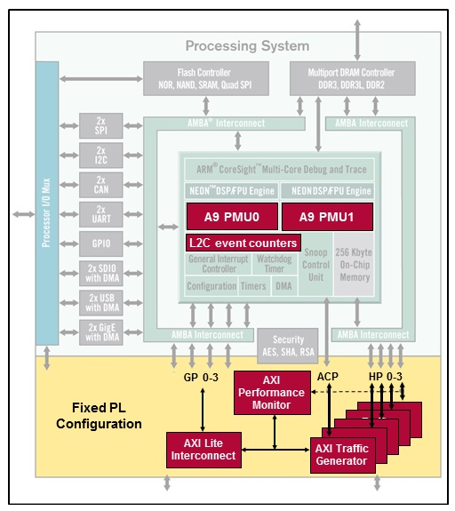

System Performance Modeling (SPM) offers system-level performance analysis for characterizing and evaluating the performance of hardware and software systems. In particular, it enables analysis of the critical partitioning trade-offs between the ARM Cortex A9 processors and the programmable fabric for a variety of different traffic scenarios. It provides graphical visualizations of AXI transaction traces and system-level performance metrics such as throughput, latency, utilization, and congestion.
SPM can be used in two ways:
In the current release, SPM is supported only for bare metal/standalone applications.
The following diagram shows the System Performance Modeling flow.
